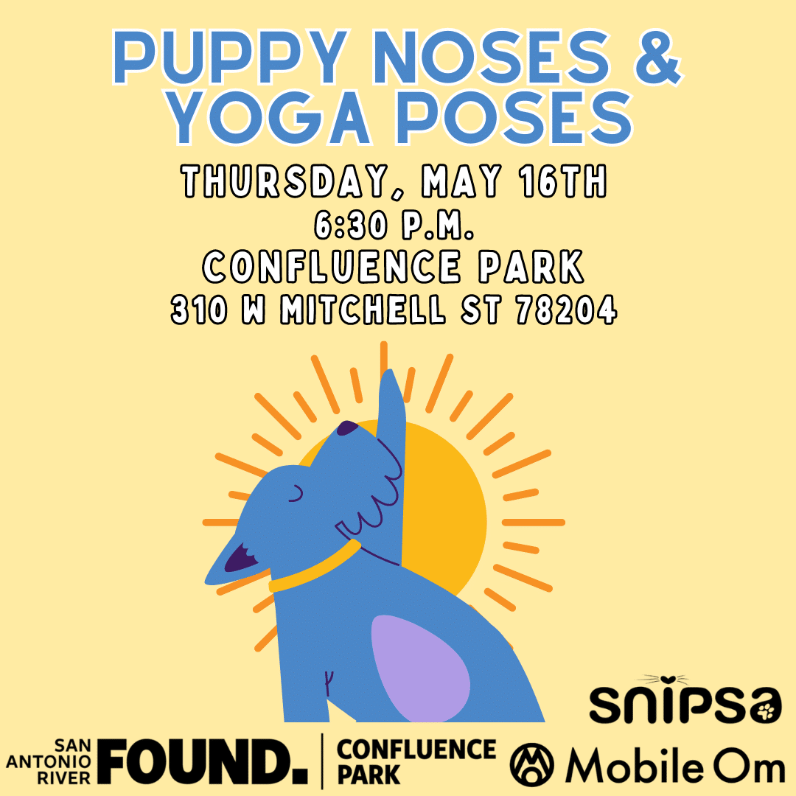
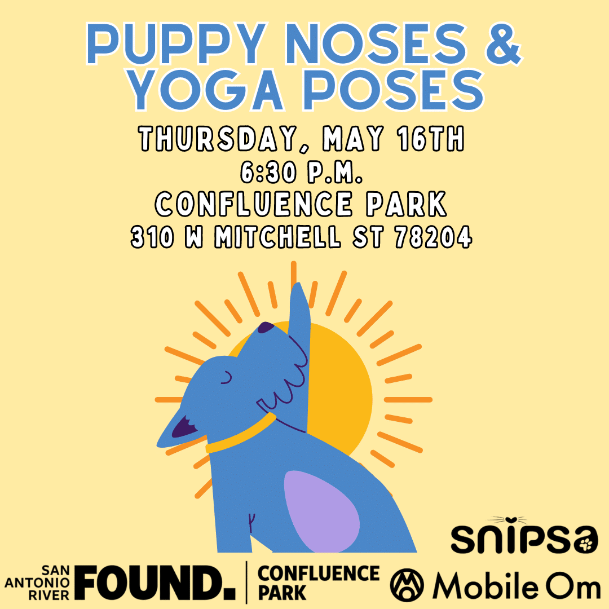

Veterinarians and Caring Individuals
we are an organization formed by a group of veterinarians and caring individuals dedicated to helping homeless and unwanted animals in San Antonio and the surrounding area. We does not have a standing shelter and depends on a core group of volunteers to foster and rehabilitate animals in their homes. This provides us with the opportunity to learn first hand about the animal’s needs and behavior in order to facilitate an appropriate adoption. We are incorporated in 2006 and has re-homed more than 20,000 animals.

 
